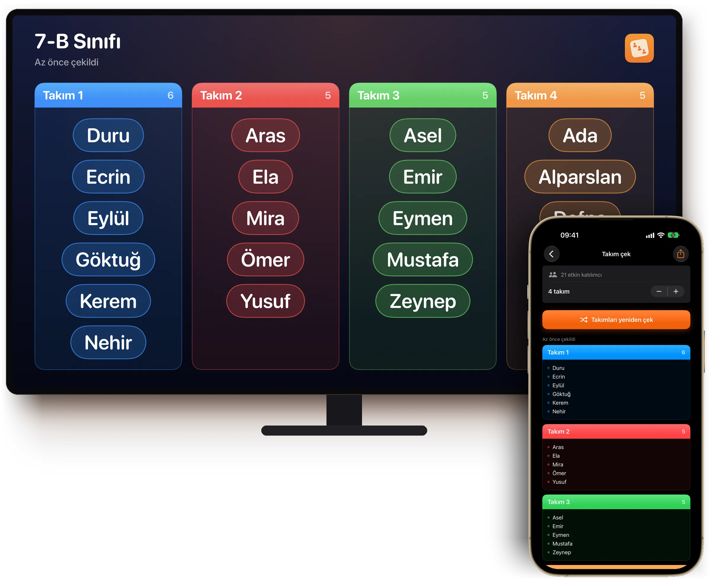
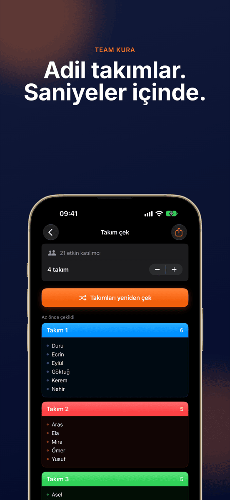
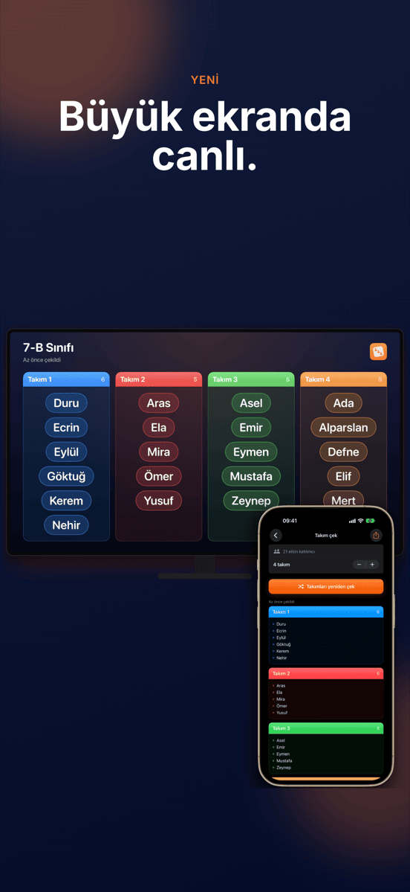
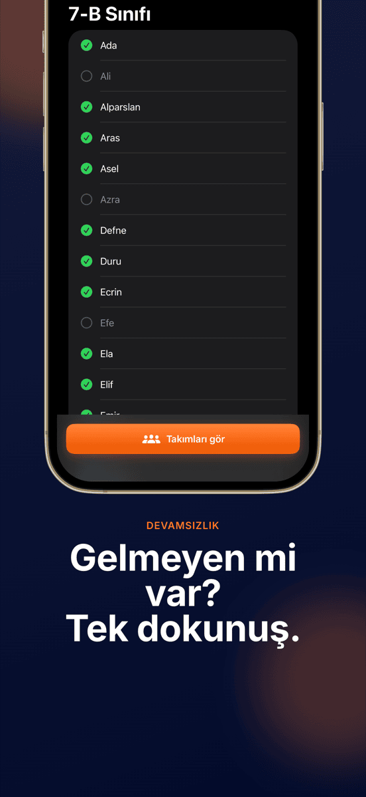
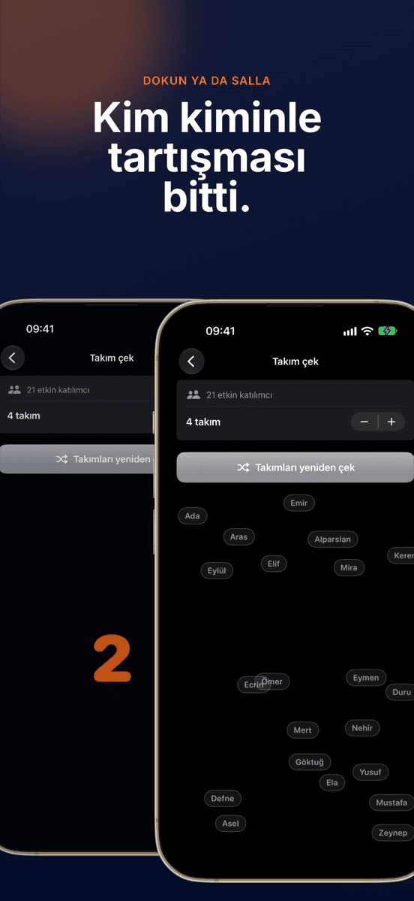
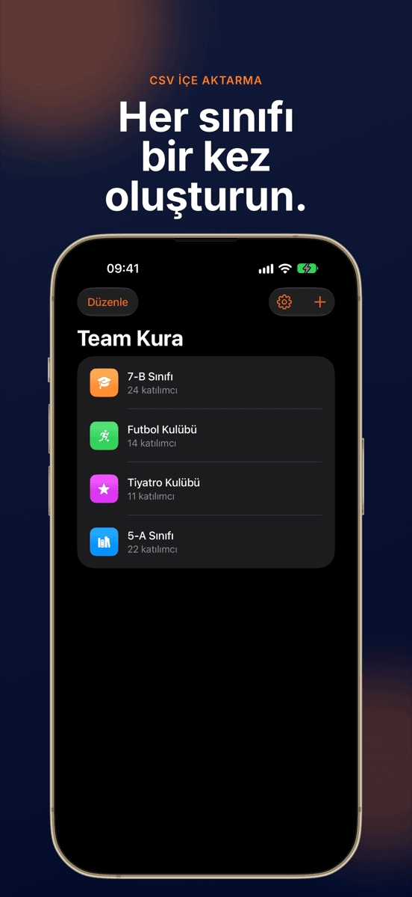
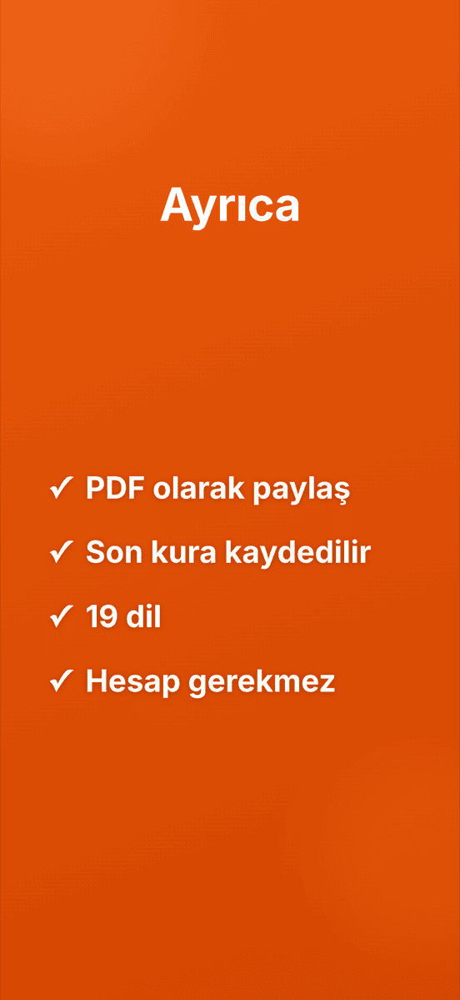

YENİBüyük ekranda canlı
Team Kura
Adil takımlar. Saniyeler içinde.







Tartışmasız takımlar.
Büyük ekranda canlı
AirPlay ya da kabloyla tüm sınıf takımların oluşmasını izler.
Tek dokunuş, bitti
Herkes takımlara rastgele ve eşit olarak dağıtılır.
Gruplar kayıtlı kalır
Sınıfı, takımı ya da kulübü bir kez oluştur, istediğin kadar kura çek. Her grup son kurasını saklar.
Gelmeyen mi var? Dışarıda
Gelmeyenlerin işaretini tek dokunuşla kaldır, kura onları atlar.
Takım sayısı serbest
İkili, üçlü, dörtlü ya da daha büyük takımlar.
Göz önünde karıştırılır
Bir animasyon tüm isimleri herkesin gözü önünde karıştırır. Cihazı sallamak yeni bir tur başlatır.
Bu kadar kolay.
Grup oluştur
İsimleri yaz ya da CSV içe aktar.
Gelmeyenleri çıkar
Bugün eksik olan her isim için bir dokunuş.
Kura çek
Takım sayısını seç, dokun, izle.
Göster
Projeksiyonda ya da PDF olarak.
Rehber
Sık sorulan sorular
Bir grubu rastgele takımlara nasıl bölerim?
Grubunu Team Kura uygulamasında bir kez oluştur, katılımcıları ekle ve kurayı başlat. Uygulama herkesi seçtiğin takım sayısına rastgele ve eşit olarak dağıtır.
Team Kura kimler için?
Grupları sık sık takımlara bölen herkes için: öğretmenler, antrenörler, atölye yürütücüleri, kulüpler ve etkinlik düzenleyicileri.
Takım sayısını kendim seçebilir miyim?
Evet. İkililerden büyük takımlara kadar kaç takım olacağını sen seçersin, Team Kura katılımcıları eşit dağıtır.
Verilerim kaydediliyor ya da gönderiliyor mu?
Tüm gruplar ve isimler yalnızca cihazında kalır. Hiçbir veri bir sunucuya gönderilmez.
İsim listelerini Excel’den aktarabilir miyim?
Evet. Listeyi Excel ya da Google E-Tablolar’dan CSV olarak dışa aktar ve Team Kura uygulamasına aktar. Tüm sınıf saniyeler içinde hazır olur.
Kurayı projeksiyonda gösterebilir miyim?
Evet. iPhone ya da iPad AirPlay veya kabloyla bir projeksiyona, Apple TV’ye ya da monitöre bağlıysa Team Kura kurayı orada canlı ve yatay olarak gösterir. Uygulamayı yine cihazından kullanırsın.
Team Kura ne kadar?
İndirmek ve ilk kura ücretsizdir. Sonraki kuralar için aylık ya da yıllık Pro aboneliği gerekir; aboneliği önce ücretsiz deneyebilirsin. Team Kura, iOS 17 veya sonrası yüklü iPhone ve iPad’de çalışır.